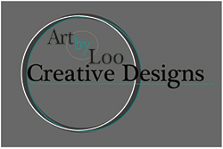

ART BY LOO

Portfolio
About
"We hired Logos by Loo for our nonprofit organization, and we could not be happier with the work she did. We now have a logo that we love. Lindsay is experienced, professional and easy to work with. She communicates well, and her work is beautiful. I would highly recommend hiring her." - Tommy Heights - Portland, OR
"Our small nonprofit has used Logos by Loo from the beginning, and she has been great to work with! She created our logo/brand and we continue to use her for designing all of our promotional materials. Lindsay is creative, easy to work with, and talented. We are always so happy with the final product. We would recommend for others to use and we will continue to use her services." - Ron Pullman - Portland, OR